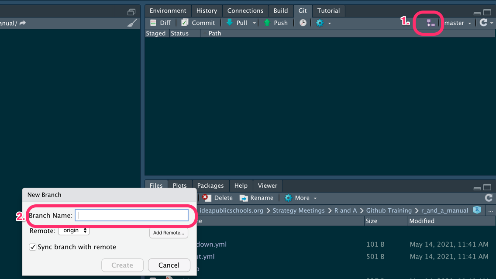

7 Project Applications
Some of the team’s data analysis and evaluation work is done on an annual basis, such as annual performance reporting (APR) on grant-funded evaluations and analyzing academic performance on state standardized tests or student persistence data. In some project areas, data is analyzed and shared on a weekly or monthly basis (i.e., senior college applications, ACT test scores). In-depth analyses are also conducted by the team that may involve multiple methods including quantitative, machine learning, and qualitative methods to gain breadth and depth for understanding a particular topic.
Work is stored in different places depending on the project and team member(s). Generally, work is stored in Wrike for project management of ongoing projects and ad hoc requests, GitHub repositories for version control, and R&A Private Group folders for accessibility and collaboration.
How do we share our work on specific projects? This chapter describes outlets for publishing and sharing results, findings, reports, and dashboards.
Some significant applications are demonstrated in this chapter.
7.1 Version control with GitHub
All analysis projects need to be saved via Git (on your local computer) and pushed to GitHub. Doing so has several benefits to both you, to your future self, and to your teammates:
- Since Git is a version control system, you get to save and track changes in your work (data, source code, reports, PowerPoint decks, Shiny dashboards) incrementally.
- Incremental saving means you can recover from any accidental plunders. It’s like Track Changes in Word, but for multiple files and folders. Spill a Diet Coke on your laptop in the middle of a big analysis? No big deal (if you’ve been pushing commits to GitHub, it’ll all be there!)
- Collaboration is much more structured, with powerful tools for asynchronous work and managing versions.
- Referencing and reviewing code, tracking issues, and sharing what you’ve done is seamless, which means …
- Your work will be reproducible: anyone from R&A can pull your repo from GitHub, run your analyses, add to or edit what you’ve done, and share those changes back in a way that is communicative and documented.
- setting up web documentation for any R packages you build becomes seamless.
But enough on the why let’s get to how (if you do want to know more on the why, check out this excellent article by Jenny Bryan)
7.1.1 Getting Started with Git, GitHub, and RStudio
Here’s a quick overview of what you’ll need to do, with details to follow:
Dedicate a directory (a.k.a. “folder”) to it.
Make it an RStudio Project.
Make it a Git repository.
Go about your usual business. But instead of only saving individual files, periodically you make a commit, which takes a multi-file snapshot of the entire project.
-
Push commits to GitHub periodically.
- This is like sharing a document with colleagues on OneDrive or DropBox or sending it out as an email attachment.
7.1.1.1 First steps
These steps are borrowed with some light editing from Happy Git and GitHub for the useR by Jenny Bryan.
- Register for GitHub account.
- Install or update R and RStudio
- Install Git
- Those on Windows will want to do these steps as well
- Introduce yourself to Git.
- Prove local Git can talk to GitHub.
- Cache your username and password so you don’t need to authenticate yourself to GitHub interactively ad nauseum.
- Create and save a GitHub Personal Access Token (PAT).
- Prove RStudio can find local Git and, therefore, can talk to GitHub.
7.1.2 Feature Branch Workflow
There are many workflows using Git and remote repositories like GitHub. All of them boil down to the following steps:
- Pull or fetch or clone a repo on Github to your local machine. If you are starting a new project, then you’ll need to create a new repo on Github (but you can also start one on your machine). This is usually called the main (formerly master) branch.
- Create a new branch that you will work on.
- Do some analysis, coding, writing.
- Periodically save a snapshot of your entire project (all the files and folders, except those that you explicitly ignore). This is called *committing changes**.
- Every once in while push your commits to the remote repo. Congrats! You’ve just backed up your project remotely and made it easy to share.
- Merge your new analysis and code back into the main branch. This is usually initiated by something called a pull request (which is admittedly a little confusing).
The specific workflow we use on IDEA’s R&A team is the Feature Branch workflow, which has the benefit of being both simple, while minimizing merge conflicts. The core idea behind the Feature Branch Workflow is that all feature development should take place in a dedicated branch instead of the main branch. This encapsulation makes it easy for multiple analysts to work on a particular analysis without disturbing the main codebase. It also means the main branch will never contain broken code. Moreover, it means you’ll be more likely to get a second or third set of eyes on our analysis. This makes your work more transparent, helps enforce coding standards, and helps spread all the cool new techniques you’ve implemented in your analysis.
So what does this look like? Well, here’s a picture of the feature branch workflow in use for this manual:
This picture shows the development of this manual over time (from left to right) as rendered by GitHub’s network diagram: it includes new branches being created, commits being made and merges back into the main branch. The black line is the main branch and includes the most up-to-date, “official” version of this book. The green and blue lines are feature branches, which diverge from the main when you checkout a new branch. The dots represent commits. Colored lines returning to the main branch indicate a merge: the new code is now part of of the main branch. You might be wondering what the unmerged yellow line labeld gh-page represents. That is a special branch that is used by GitHub Actions that uses the concept of continuous integration/continuous delivery to build the website that hosts this manual. You don’t need to worry about that one; it’s simply used to build out the site magically.
7.1.3 Example workflow with this manual, or getting your feet wet
This section is going to walk you through how to use git/github by updating this manual. You’ll (i) clone the GitHub repo locally on your laptop, (ii) create a feature branch, (iii) make some changes to this documentation, save those changes, and then commit those changes git (i.e., locally take a snapshot), (iv) push those changes (including all of your commits) up to the GitHub repo, (v) initiate a pull request (i.e., ask to merge your branch into the main branch), and finally (vi) merge your changes into the master branch.
But first things first:
- Verify you did the initial set-up steps above
- Get your bio ready.
**Note that throughout the steps below I’ll show you how to each step. Ok. You ready? Great! Here we go.
7.1.3.1 Get the R_and_A_Manual repository URL
Go to R_and_A_Manual repo in your browser.
-
On the main page for the repo click the green Code button, Click on HTTPS (the default), and click the clipboard to copy the repo’s URL:

7.1.3.2 Clone the repo
Now you’ll pull the remote repo from GitHub onto you computer. You’ll want to think about where you want to save this. For example, I save data analysis projects in separate folders under a Data_Analysis/ folder. I save the manual just on my OneDrive.
7.1.3.2.1 Command line
Here I’m saving this to temporary space, by navigating to ~/tmp/~ and then cloning the data:
This will pull down all the content of the repo: files, folders, all commits, all branches. Really the whole kit and kaboodle.
7.1.3.2.2 RStudio
Here’s how you do it from RStudio:
- In RStudio, start a new Project: File > New Project > Version Control > Git, or click on the project icon in the upper right-hand corner of the IDE and select New Project….

- In the “repository URL” paste the URL of your new GitHub repository. That is: https://github.com/idea-analytics/r_and_a_manual.git
- Be intentional about where you create this project.
- You should click “Open in new session”.

- Click Create Project to create a new directory, which will be all of these things:
- a directory or “folder” on your computer
- a Git repository, linked to the remote GitHub repository
- an RStudio Project
Cool. You should now have the R&A Manual files on repo history on your computer!
7.1.3.3 Check out a branch
Before you start doing anything you should check out a branch. A branch is like your own, temporary, disposable workspace. When you checkout a branch you create a new copy of the repo and changes you make only happen on the branch. When you’re happy with the changes and are ready to share them you’ll create a pull request. But we’ll get to that below.
7.1.3.3.1 Command line
It’s pretty straightforward. You create the branch, by giving a short but meaningful name, and then check it out.
Or you can do both of those moves in one line by using git checkout with the -b flag:
7.1.3.3.2 RStudio
- Click on the Git panel (usually in the upper right on the standard RStudio layout, but YMMV if you’ve customized your layouts).
- Click on the purple “branch” icon (it kinda looks like a piece of a flowchart). 
- Give a short but meaningful name (something like,
update-bio-cjh). Make sure the Sync branch with remote checkbox is selected; this will save you a step later when you push you changes up to the repo.
7.1.3.4 Making changes and saving them
You are now on a new branch and ready to make some changes. Go ahead and open 02-Who_We_Are.Rmd file and add your name as a section, update your bio and save it, as you usually would.
Now you’ll want to commit those changes, which takes a snapshot of the current state on the branch you are working on.
7.1.3.5 Command line
After saving you’ll run the git commit command with the -a (adds all changes) and -m (add commit message) flag with a short description of what you did.
You should do this often. After awhile you’ll want to push your changes up to GitHub (frequently, but not as often as commits):
You’ve likely not yet defined where this remote branch should go, but Git will give you a helpful error which gives you the command for syncing your local branch with a new remote branch:
fatal: The current branch update-bio-cjh has no upstream branch.
To push the current branch and set the remote as upstream, use
git push --set-upstream origin update-bio-cjhGo ahead and copy and run that command.
After that you can just use git push and your branch changes will be saved remotely.
7.1.3.6 Maintaining large files
If you have a file that is over 100 MB in size (e.g., a PowerBI dashboard), GitHub will block your commit (or at least send you a warning). There are two ways of approaching this issue:
- Use the large file storage (LFS) extension to commit the file.
- Add the file to .gitignore so the file is not committed.
7.1.3.6.1 Large file storage (LFS)
Scenario: Suppose you have a PowerBI file Persistence_Dashboard.pbix that is 137 MB in size, so it cannot be handled through a normal Git workflow. You will need to download the LFS extension from this site: https://git-lfs.github.com/. Once you download, then you will follow these steps:
- Open the Git command line. (I have not found a solution through RStudio or GitHub Desktop).
- Switch to the repo and branch that has the large file.
- Install the LFS extension in the correct repo and branch using
- Track the file extension (in our scenario, .pbix), using
- Track .gitattributes
N.B. Do not complete steps 3, 4, and 5 until after you have switched to the correct repo and branch. 6. Commit the file and push normally.
When you commit, you will see a message indicating the LFS extension was used on that file.
7.1.3.6.2 Using .gitignore
Alternatively, you could choose not to commit the file and just keep the large file locally. (This is a good option if the file can be generated through code, like a .csv output). You will follow these steps:
- If the file does not already exist, create a text file called
.gitignorein your repo. - Add the name of the file you wish to ignore in the
.gitignorefile (e.g.,.Rdatais ignored when using ProjectTemplate). - Save
.gitignoreand commit.
7.1.3.7 RStudio
- In your Git panel you see changed (or new) files show up. You’ll want to select the check box for any file that’s been modified (indicated by an M) or that needs to be added (indicated by an A). Doing so readies the file to be updated in the commit:

- Click the commit button and new dialog box will open, which will show any changes you’ve made in any file. Select the check box for staged, if isn’t already selected, add a commit message and click Commit

- When you’re ready to save those to the repo, simply press the Push button.
7.1.3.8 Merging changes
Merging changes in your feature branch with the main branch requires you go to GitHub and to a pull request. A pull request is essentially asking the main branch to “pull” in your changes and is technically known as a merge. So here are the steps:
- Go to the repo (https://github.com/idea-analytics/r_and_a_manual).
- You may see an info box suggesting you can merge your branch. If so, click on the Compare & pull request button. If not select your branch and click the Pull Request icon.
- If you are able to merge (you’ll know) click the Create pull request button.
- Ask someone to review your request (ideally)
- Click the Merge pull request button and confirm the merge.
- If you are done with your feature branch feel free to delete it.
You’re done!
You’ll want to be careful here if you are working with others. If you pulled your main branch down awhile ago there is a risk that the main branch on your laptop is not up-to-date with the main branch on Github (because others have merged changes there).
The best remedy is to checkout and pull main—which gets up to date—and then checkout your branch and run git merge main. You may have to resolve conflicts.
7.2 Project Process
When we are working on a project, we need to document not only our analytical work, but also our organization and management. There are multiple tools we use to plan, track, modify, and evaluate our progress among our team and with our stakeholders, and as we evolve, we certainly can add to our best practices for each of these tools. Namely, we will discuss how to set up Wrike projects, set up a GRPI/RASI, use operating mechanisms, and other important project structures.
The key point is that we backwards plan from our final product. The project management tools document these processes in greater detail, in the same way that a teacher might backwards plan from the assessment to the lesson, or a leader might document and follow up with the next steps from a meeting.
7.2.1 General project management
- When you have a project established, you still need to document your progress as you move forward.
- During a project meeting, jot down key points and next steps as a comment, or create new tasks.
- Add comments after relevant tasks are completed.
- Include links to any completed products.
Are you taking notes in a notebook, on a OneNote, or in a Teams chat? Capture the links to all your relevant documents, GitHub repos, notes, pictures, etc. in a relevant task, as a comment, or in a description in a Wrike project! You’ll be able to find things you forgot about months later.
- If you used a GRPI/RASI for the project, be sure to update your stakeholders, as well.
- Include a link to the GRPI/RASI in the Wrike project.
- When you update Wrike, update the GRPI/RASI.
- Your GRPI/RASI should succinctly summarize what you are doing in the project.
- Things might change in your project. Each week, ask yourself:
- Did the scope of the work change?
- Did the timeline of the project change?
- Did I realize something else needed to be completed?, and so on
If you need to modify the project, carve out time to do so. Evaluating your progress will help keep yourself on track, and will alert others that the project may take longer or may end differently than originally planned. And of course, document it!
7.2.2 Wrike projects and requests
We use Wrike as our main project management system to track the workflow for our team. All information requests generate a Wrike task, which will be accepted or rejected from our work. Once we know who will be assigned to the request, we can use Wrike in the following ways to organize the work.
7.2.2.1 Onboarding and setup
During tactical or throughout the week, review any new Wrike requests.
Determine if the request will be accepted, and if so, determine who will be assigned to the task.
Evaluate the scope of the request with your team AND the requester.
- Vet the request thoroughly and ask clarifying questions with the requester.
- If this is an ad-hoc request, keep the request in the original queue and set up tasks (see next section).
- If this is a medium- to long-term request, then set up a project and related tasks into an appropriate folder:
- Evaluation Projects
- Impact Analyses
- An appropriate project folder
- N.B. For medium- to long-term requests, you should consider establishing a GRPI and a RASI for your stakeholders, so that you have a common document for the scope and progress of the work.
7.2.2.2 Goal setting and deadlines
- Once your Wrike project or task has a page, then you should start backwards planning from the deliverable. Ask yourself:
- What is the goal of the project? (document it!)
- What is the deliverable for the project? (document it!)
- When is that deliverable due? (document it!)
- Assign the goal and the deliverable to the task or project.
- You can create a task for the deliverable and assign a due date.
- You can use the project/task description, leave a comment, or create a task for the goal.
- Ex. “Deliver slide deck and final report to Dolores” could be the deliverable, and “2021-12-17” could be the due date.
7.2.2.3 Defining tasks and dependencies
- Now, you need to accomplish those goals and produce the deliverable. Ask yourself:
- What steps do I need to produce the deliverable?
- What is the order in which I need to do those steps?
- Do certain steps require other tasks to be completed first?
- For each step you identified in part (1), create a new task.
- Tasks are specific, bite-sized steps.
- Ex. “Make time series plot of AP Spanish Language scores at Mission CP” could be the task
Assign tasks created in step (2) to the backlog.
Create dependencies for relevant steps.
- Link the predecessors (i.e., the steps before) and the successors (i.e., the steps after) to the task/subtask.
- Establish due dates for ALL steps, including dependencies, etc.
7.2.2.4 Kanban workflow
Kanban (a Japanese word for visual signal) is a workflow for visualizing your progress. We track our project tasks using a Kanban board on Wrike. Tasks can move through a workflow in the following order:
\(\textrm{Backlog} \rightarrow \textrm{Work in Progress} \rightarrow \textrm{Work in Review} \rightarrow \textrm{Completed}\)

Each stage can be roughly defined as the following:
- Backlog: This category may hold tasks for brainstorming or future development. None of these tasks have been started.
- Work in Progress: These tasks have been pulled from the Backlog and have been started. They are not yet complete.
- Work in Review: These tasks have reached a critical benchmark in development and need final feedback or revision. They are not yet approved for completion.
- Completed: These tasks have been completed.
To use a Kanban task workflow for a project:
- Open the context menu for a project (right-click).
- Change default workflow -> For tasks -> R&A Kanban Task Board Workflow.

When you choose the “Board” view for the project, you should see the Kanban board with the appropriate categories. Task cards should be created and moved as you progress through the project.
7.2.3 GRPI and RASI
While we use Wrike internally to manage a project, external teams cannot access our workspace. Therefore, we must use different tools to track goals and roles for cross-functional projects.
- A GRPI is a tool governing the Goals, Responsibilities, Processes, and Interpersonal norms of a project. This describes the purpose of the group working on the project.
- A RASI is a tool governing the roles of each group member. Each task should have a person who is: Responsible, Approving, Supporting, and Informed.
The GRPI and RASI should be shared between relevant teams and stakeholders. These documents serve as the contract and tracking system for the project. Note that while these tools are often paired together, some smaller tasks could benefit from just the RASI structure.
For more information, visit the Best Practices on GRPI and RASI.
7.2.4 Project operating mechanisms
To monitor an ongoing project with your group members (either internal or external), consider an appropriate operating mechanism. An operating mechanism is a process (see GRPI) for establishing how the work can done. These meetings help establish and maintain regular communication across teams (see Best Practice for Strong Business Partnerships. At IDEA, two common operating mechanisms are:
Daily huddle: A (daily / morning / stand-up) huddle is a short (less than 10 minutes) to recap progress from the prior day and to state priorities for the current day. A team leader may also establish priorities for the team and provide announcements. This type of operating mechanism is optimal for teams that need to align priorities day-to-day. A Best Practice for Daily Huddles is also available.
Tactical: A (weekly / biweekly) tactical is a recurring meeting to review goals, share information, and solve short-term problems. Usually, there are both recurring agenda items and a real-time agenda that can be flexible week-to-week. This type of operating mechanism is optimal for both internal and cross-functional teams working towards a long-term goal. A Best Practice for Weekly Tactical is also available.
Consider reviewing Wrike, or the GRPI and RASI, at each of these operating mechanisms to record your progress, notes, and next steps.
7.2.5 Outgoing data requests
If a data request or project is being sent to an external-to-IDEA partner (or potentially internal partners), then the data must be vetted for accuracy and consistency with prior data. Our team has processes to ensure that what we publish is consistent with a “source of truth” and can be easily verified later.
For the complete process, read through this document on Outgoing Data Requests.
7.3 ProjectTemplate (for analyses)
ProjectTemplate is both an R package and an approach. Simply put, it’s a package that builds the scaffolding for a project, provides good features for tracking package dependencies (though we also use renv for that), and separating data loading and prep from analysis and output, as well as caching of long running processes, which speeds up analytical time.
Is it perfect? No. It has more features than we’ll likely ever use (logging, code profiling, and unit testing).
If you are new to ProjectTemplate the Getting Started Tutorial is great. Indeed, it’s always good to read the docs
{kind=link}
Seriously, though. The ProjectTemplate documentation is great and you should really set aside an hour to read through it. This manual will provide a very abbreviated overview of how to use ProjectTemplate at IDEA, but will not be a stand in for the official documentation.
7.3.1 Installing ProjectTemplate
Installing the package is straightforward
install.packages("ProjectTemplate")7.3.2 Creating a project with ProjectTemplate
Creating a project is pretty simple. Navigate to where you typically save projects via RStudio and then run the following commands:
library(ProjectTemplate)
create.project("learning-pt")Doing that bestows upon you the following directory structure:
You’ll notice in the image above that there is .Rproj file, which isn’t added by ProjectTemplate. I created an Project in RStudio first and then navigated to that direction and ran the following:
create.project("../learning-pt/", merge.strategy = "allow.non.conflict"),
which allows you to scaffold ProjectTemplate in an existing directory while ignoring any existing files and folders (usually *.Rproj and .git).
7.3.3 What goes where
We only use about half of the directories that ProjectTemplate Scaffolds. Here’s what we use, in the order it’s evaluated by ProjectTemplate when you run load.project():
config This directory contains the configuration file global.dcf. This is the first thing that load.project() looks at. The full list of what each setting does is here. Here are a few highlights, in their order of importance.
-
load_libraries: This can be set to ‘on’ or ‘off’. Ifload_librariesis on, the system will load all of the R packages listed in the libraries field described below. By default,load_librariesis off. I highly recommend that you turn this on. - ‘libraries’: This is a comma separated list of all the R packages that the user wants to automatically load when
load.project()is called. These packages must already be installed before callingload.project(). By default, the reshape2, plyr, tidyverse, stringr, and lubridate packages are included in this list. I recommend dropping these and only adding packages you are using for the project. -
data_loading: This can be set to ‘on’ or ‘off’. If data_loading is on, the system will load data from both the cache and data directories with cache taking precedence in the case of name conflict. By default,data_loadingis on. -
cache_loading: This can be set to ‘on’ or ‘off’. Ifcache_loadingis on, the system will load data from the cache directory before any attempt to load from the data directory. By default,cache_loadingis on. -
munging: This can be set to ‘on’ or ‘off’. Ifmungingis on, the system will execute the files in themungedirectory sequentially using the order implied by thesort()function. Ifmungingis off, none of the files in themungedirectory will be executed. By default,mungingis on. -
as_factors: This can be set to ‘on’ or ‘off’. Ifas_factorsis on, the system will convert every character vector into a factor when creating data frames; most importantly, this automatic conversion occurs when reading in data automatically. If ‘off’, character vectors will remain character vectors. By default,as_factorsis off. *This is a very good default, and the opposite of base R.
lib: This directory is used to house helper functions. You can store them in an *.R file (like the included helpers.R file). ** As a general rule of thumb, if you’ve copied-and-pasted a block of code twice, don’t do it a third time; rather, abstract that block into a function and save it in this directory. load.project sources the files in this directory after readying global.dcf.
cache: Here you’ll store any data sets that (i) are generated during a preprocessing step and (ii) don’t need to be regenerated every single time you analyze your data. You can use the cache() function to store data to this directory automatically. Any data set found in both the cache and data directories will be drawn from cache instead of data based on ProjectTemplate’s priority rules. ProjectTemplate always checks this before running code in the data/ and munge/ directories. You can learn more about caching here.
data: You store your raw data files here. If they are encoded in a supported file format, they’ll automatically be loaded when you call load.project(), *unless cached versions of their output exist in the cache/ directory.
munge: Here you can store any preprocessing or “data munging” code for your project. For example, if you need to add columns at runtime, merge normalized data sets, or globally censor any data points, that code should be stored in the munge directory. The preprocessing scripts stored in munge will be executed in alphabetical order when you call load.project(), so you should prepend numbers (to digit like 01-aggregate_schools, 02-calc-means, …) to the filenames to indicate their sequential order. Files in here are run after those in cache/ and data/ are loaded.
reports: Here you can store any output reports, especially RMarkdown reports, that you produce. This is where final reports live.
ProjectTemplate doesn’t always play well with RMarkdown (well, really the issue is with knitr). The biggest issue is running load.project() inside of RMarkdown. ProjectTemplate will complain that your reports/ directory is not a ProjectTemplate directory, which is annoying. It’s easily fixed with this line of code at the top of your RMarkdown and you are in Rproject:
setwd(here::here()); load.project()
This will change the working directory to the top of project and then run load.project. After the project is loaded knitr will set the working directory back to reports/, so all other file references should be relative to reports/
src: Here you’ll store your statistical analysis and machine scripts. You should add the following piece of code to the start of each analysis script: library('ProjectTemplate); load.project() (you don’t need the tip above here). You should also do your best to ensure that any code that’s shared between the analyses in src is moved into the munge directory; if you do that, you can execute all of the analyses in the src directory in parallel. A future release of ProjectTemplate will provide tools to automatically execute every individual analysis from src in parallel. You may want to cache() your results here as well.
graphs: Here you can store any graphs or PowerPoints that you produce, with the exception of those already contained in RMarkdown files.
7.4 The renv package: Ensuring reproducibility
The renv package goes a long way to solving a pernicious problem: Dependency Hell. Here’s a good description of the problem:

This problem mostly manifests when you revisit a recurring project a year later. You updated some year variables in your code and rerun your code and ready to pat yourself on the back and then BAM! your code breaks. It breaks because over the previous 12 months the packages you relied upon a year ago have been updated over time and don’t work with other packages. Sometimes all you need to do is update all of your packages and everything is hunky-dory; but other times this brute force process doesn’t work. You are left trying to understand what has changed over multiple packages, what you need to change in your code and something you thought would take you an hour takes a week, with most days feeling like you’re just banging your head against the wall.
This issue alone should be enough to convince you that you need to create reproducible environments.
Another reason is related and often very immediate: working on the same analysis with someone else. Perhaps you are fastidious and only use the most current version of every package and your partner is risk averse and only updates packages after they’ve been out in the wild for at least a year. If you are in this boat you’re going to have problems.
Again, you need to create reproducible environments.
This is a common technique in Python and there it goes by the name of virtual environments. renv is an R implementation of the concept that is pretty elegant. Along with ProjectTemplate, we use the renv package to ensure that our analysis projects are:
Isolated: Each project gets its own library of R packages, so you can feel free to upgrade and change package versions in one project without worrying about breaking your other projects.
Portable: Because
renvcaptures the state of your R packages within alockfile, you can more easily share and collaborate on projects with others, and ensure that everyone is working from a common base.Reproducible: Use
renv::snapshot()to save the state of your R library to the lockfilerenv.lock. You can later userenv::restore()to restore your R library exactly as specified in the lockfile.
These three points are crucial for working well with others and protection for your future self.
As usual, you really should read the docs for renv. They are thorough and clear.
There’s also an excellent FAQ
7.4.1 Setting up renv with a new project
If you are starting a new project in RStudio then setting up renv is easy: just be sure to click the Use renv with this project.
Checking that box will add the bootstrap renv, installing the package if necessary as well as a few folders and files that serve as infrastructure.
7.4.2 Setting up renv with an existing project
If you’ve got a project that you want to starting using renv, it’s pretty straightforward.
- Install
renvif you don’t have it:install.packages('renv') - Use
renv::init()to initialize a project.renvwill discover the R packages used in your project, and install those packages into a private project library.
It’s really that simple!
7.4.3 Using renv
The renv workflow is super duper simple, after you’ve set it up:
- Work in your project as usual, installing and upgrading R packages as required as your project evolves.
- Use
renv::snapshot()to save the state of your project library. The project state will be serialized into a file calledrenv.lock. - If you want to revert to the previous state of your project—i.e., you installed a new version of a package and it’s wreaking havoc on your project—simply use
renv::restore().
Following these simple steps isolates your project’s environment from the rest of your other projects. So downloading a bleeding-edge, dev version of package from GitHub because you need a new feature won’t pollute your other projects that are running just fine. This is the isolation bit mentioned in the three points above.
7.4.4 Collaborating with renv
The renv developers recommend the following steps when using renv in collaborative settings
One user should explicitly initialize
renvin the project, viarenv::init()or when starting an RStudio project. Doing so will create the initialrenvlockfile, and also write therenvauto-loaders to the project’s.Rprofileandrenv/activate.R. These will ensure the right version ofrenvis downloaded and installed for your collaborators when they start in this project.Share your project sources, alongside the generated lockfile
renv.lockvia GitHub. Be sure to also share the generated auto-loaders in.Rprofileandrenv/activate.Rvia the repo.When a collaborator first launches in this project,
renvshould automatically bootstrap itself, thereby downloading and installing the appropriate version ofrenvinto the project library. After this has completed, they can then userenv::restore()to restore the project library locally on their machine.
While working on a project, you or your collaborators may need to update or install new packages in your project. When this occurs, you’ll also want to ensure your collaborators are then using the same newly-installed packages. In general, the process looks like this:
A user installs, or updates, one or more packages in their local project library;
That user calls
renv::snapshot()to update therenv.locklockfile;That user then shares the updated version of
renv.lockwith their collaborators via github;Other collaborators then—after a git pull—call
renv::restore()to install the packages specified in the newly-updated lockfile.
A bit of care is required if collaborators wish to update the shared renv.lock lockfile concurrently – in particular, if multiple collaborators are installing new packages and updating their own local copy of the lockfile, then conflicts would need to be sorted out afterwards.
Use teams to ensure any changes to renv.lock are communicated so that everyone knows and understands when and why packages have been installed or updated.
For more information on collaboration strategies, please visit environments.rstudio.com.
7.5 Steps to Create a GitHub Repository with ProjectTemplate and renv
Below is a step-by-step guide to create a GitHub repository with ProjectTemplate and renv. Note that this is one way to create a repository.
*Note. Replace “new_project” with your new project name
1. Create a folder for the repo

2. Open R
3. R: Set the working directory to use the folder that was just created
setwd("[insert your path]")4. R: Set up the ProjectTemplate directory structure inside a folder titled “new_project”
install.packages("ProjectTemplate")
library(ProjectTemplate)
# add to existing folder
create.project("[insert your path]", merge.strategy = "allow.non.conflict")5. R: Create a project file named “new_project.Rproj” inside the “new_project” folder
Step 1: File > New Project

Step 2: Existing Directory
Step 3: Select the “new_project” folder > check “Open in new session” > click “Create Project”
6. R: set up the reproducible environment within the new Rproject
Step 1: Tools > Project Options

Step 2: Git/SVN > select “Git” for Version control system

Step 3: Environments > check “Use renv with this project”

7. GitHub: add repository to GitHub
Step 1: Open GitHub Desktop
Step 2: File > Add local repository…

Step 3: Select the “new_project” folder > Add repository

Step 4: Commit any files that are in the repository

Step 5: Publish repository > check “Keep this code private” > select Organization as “idea-analytics”
8. R: install ideadata and ideacolors packages
library(renv)
renv::install("idea-analytics/ideadata@main")
install.packages("devtools")
library("devtools")
devtools::install_github("idea-analytics/ideacolors")If you get this error,
use this code instead
devtools::install_github("idea-analytics/ideacolors", auth_token = "my_personal_access_token")10. R: open config > global.dcf and change load_libraries to TRUE + add ideadata and ideacolors to library list + add any other libraries needed + change any other configuration settings as needed

11. R: save the state of the project library (and do this each time you want to save the state of the project)
renv::snapshot()7.6 Publishing Projects
Our reports can be published for our stakeholders through a variety of sites. The location is up to you, but there are some nice options to do so.
7.6.1 RStudio Connect
If your report is written in RMarkdown, then you can directly publish your report from RStudio to RStudio Connect at our team site.
To publish a report, do the following:
Make sure your output in the header section is set to
output: html_document. You can add other options, like a table of contents and formatting.Knit your .Rmd to find any compiling errors before you publish.
Click on the blue Publish button in the upper right hand corner of the html output or in the editor.
Select RStudio Connect.
Choose if you want to publish with the source code or just publish the finished document. (The source code is useful if your report is recurring and can be updated, while the finished document is appropriate for things like analytical reports.)
Select analytics.ideapublicschools.org as the destination. Then, choose an appropriate title for your report. Finally, click Publish.
If the .Rmd filename is too long, then the report will not publish. You’ll need to shorten the filename if you get errors.
- Check your report on RStudio Connect and make adjustments under the Settings gear.
A detailed guide about publishing can be found in the RStudio Connect documentation.
7.6.2 Power BI
If your dashboard was created in Power BI and you want to directly publish your dashboard to app.powerbi.com (Power BI Online) these are the steps to do so. You can go directly online to view your Power BI.
Make sure at the top right you are signed in with your account.
Save the report before Publishing.
On the Home menu, on the far right click Publish
Select the Workspace that you want to Publish the dashboard to, then click “Select”. If you want to later post this Published dashboard to the team site (TheHub), select the “Research and Analysis” Workspace or a Premium Content Workspace, noted by a diamond on the Workspace.
Go to Power BI then go to your dashboard in the Workspace you Published and there will be two items, the dashboard and the data.
Click on the dashboard report and then go to File > Embed report > Website or portal and copy the link in “Here’s a link you can use to embed this content.” Use that link to share out or post to a Team Site.
7.6.3 Team Site (TheHub)
The R&A Team Site Documents folder contains files we upload to the Team Site.
The Team Site (TheHub) Documents folder is not to be confused with the R&A Private Group Documents folder. The [R&A Private Group][R&A Private Group] Documents folder contains shared folders R&A team members use for collaborative work and storage.
7.6.3.1 Published Evaluation Plans
On an annual basis, save a copy of the final evaluation plan to the Team Site Documents folder and select for upload to the R&A Team Site.
The Team Site (TheHub) and Team Site Documents folder are not to be confused with the R&A Private Group Documents folder. The [R&A Private Group][R&A Private Group] Documents folder contains shared folders R&A team members use for collaborative work and storage.
Evaluation plans are published annually to the Team Site (TheHub). Published evaluation plan files are stored in the Team Site Documents folder > Evaluation > Evaluation Plans > FY 20## for accessibility, consistency, and organization purposes.
On an annual basis, save copy of each final, approved, ready-for-publication evaluation plan to the appropriate Team Site Documents folder. Select files for upload to the R&A Team Site.